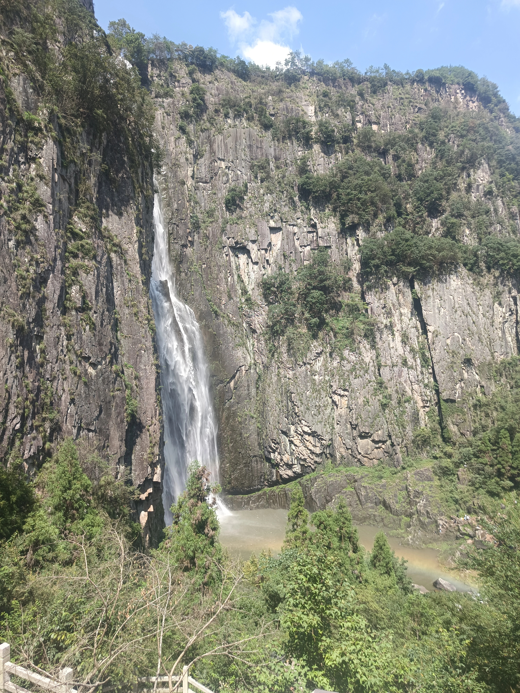
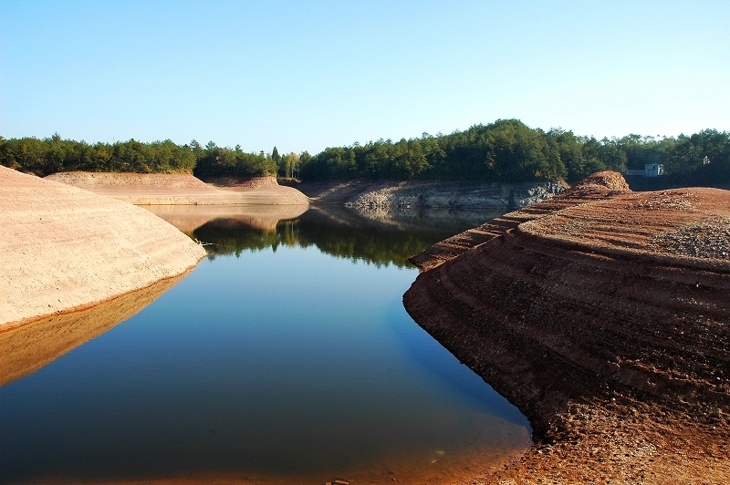
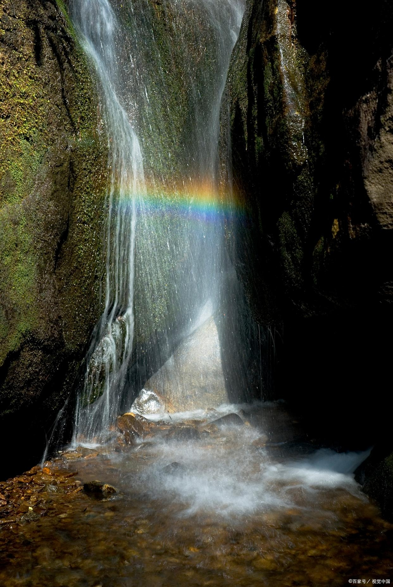

中国第一高瀑，气势磅礴

百丈一漈是百丈漈瀑布群中最为壮观的一漈，落差达207米，被誉为"中国第一高瀑"。瀑布如银河倒泻，气势磅礴，震撼人心。
站在观瀑台上，感受着瀑布飞溅的水雾和震耳欲聋的轰鸣声，仿佛能感受到大自然的磅礴力量。每到夏季，这里更是避暑胜地，清凉的水雾让人心旷神怡。
百丈一漈也是摄影爱好者的天堂，无论是晴天的蓝天白云，还是雨天的云雾缭绕，都能拍出令人惊叹的照片。
水帘洞奇观，晶莹剔透
百丈二漈高68米，瀑布如珠帘垂地，晶莹剔透。最为奇特的是，在瀑布后面有一条天然的石廊，人可以从廊中穿过，仿佛置身于《西游记》中的水帘洞一般。
站在石廊中，感受着瀑布从头顶倾泻而下，形成一道天然的水幕，阳光透过水雾折射出七彩光芒，美不胜收。这里也是游客最喜欢拍照留念的地方之一。
二漈的水流相对较缓，瀑布下形成了一个深潭，潭水清澈见底，周围绿树成荫，是一处难得的避暑胜地。

如仙女散花，轻盈飘逸

百丈三漈高12米，水流较为平缓，如仙女散花般轻盈飘逸。瀑布下是一片开阔的浅滩，溪水清澈见底，是游客嬉戏玩水的好去处。
三漈周围植被茂盛，空气清新，是一处天然的氧吧。每到春季，周围的野花竞相开放，五彩斑斓，美不胜收；秋季则红叶满山，景色迷人。
这里也是亲子游玩的最佳选择，孩子们可以在浅滩中捉鱼嬉戏，感受大自然的乐趣。
纪念明朝开国元勋刘伯温的庙宇
刘基庙，又称诚意伯庙，是纪念明朝开国元勋刘伯温的庙宇。始建于明朝天顺三年（1459年），现存建筑为清代重建，是浙南地区现存最完整的明代宗祠建筑群。
庙内保存有大量明清时期的碑刻、匾额和文物，其中最著名的是明正德皇帝御赐的"开国文臣第一"匾额。庙内的建筑雕梁画栋，工艺精湛，充分体现了古代建筑艺术的高超水平。
每年农历正月十五和刘伯温诞辰日，当地都会举行盛大的祭祀活动，吸引了众多游客和刘氏后裔前来参加。

高峡平湖，湖光山色

天顶湖是百丈漈景区的重要组成部分，是一个人工湖，因位于海拔638米的高山之巅而得名。湖面面积5.4平方公里，蓄水量1.4亿立方米，是浙江省最大的高山湖泊之一。
天顶湖四周群山环抱，湖光山色，美不胜收。湖水清澈透明，碧波荡漾，湖中岛屿星罗棋布，形态各异。在这里，你可以乘船游览湖光山色，也可以在湖边散步、钓鱼，享受宁静的自然时光。
天顶湖也是观赏日出和日落的绝佳地点，每当清晨或傍晚，湖面波光粼粼，与周围的山峦、云雾交相辉映，构成一幅美丽的画卷。
阳光明媚时的绝美景观

彩虹桥位于百丈一漈下方，是一座横跨溪流的石拱桥。每当阳光明媚的日子，瀑布飞溅的水雾在阳光的折射下会形成美丽的彩虹，横跨在桥的上方，形成"彩虹桥"的绝美景观。
彩虹桥的最佳观赏时间是上午9点至下午3点，此时阳光充足，彩虹出现的概率最高。而且，不同的季节和天气条件下，彩虹的颜色和形状也会有所不同，非常神奇。
站在彩虹桥上，感受着脚下潺潺的溪流和眼前绚丽的彩虹，仿佛置身于仙境之中。这里也是情侣们拍照留念的热门地点，象征着爱情的美好和永恒。